|
|
Current technologiesI'm proficient in a range of modern technologies that empower me to build highly functional solutions. These are some of my main technologies. AI & Machine Learning
PyTorchML framework 
TensorFlowML platform 
LlamaIndexLLM data framework Cloud & Databases
PostgreSQLRelational database 
MongoDBNoSQL database 
DockerContainerization 
AWSCloud platform 
AzureMicrosoft cloud Backend & Tools
Node.jsJavaScript runtime 
SupabaseBackend tool 
DjangoPython web framework
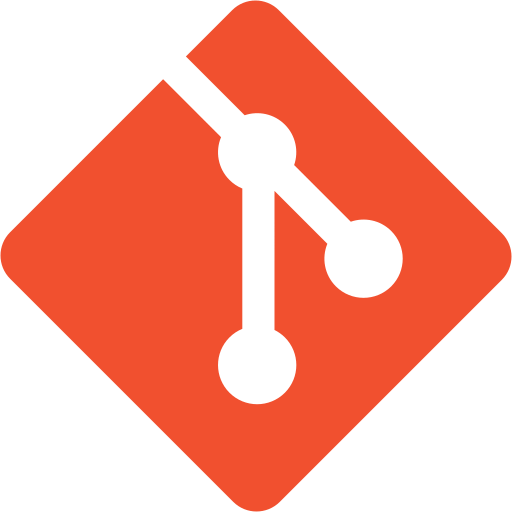
GitVersion control Frontend & DesignTypeScriptJavaScript but better 
ReactJavaScript Library 
NextJSReact framework TailwindCSS framework FigmaDesign Tool |
My Projects
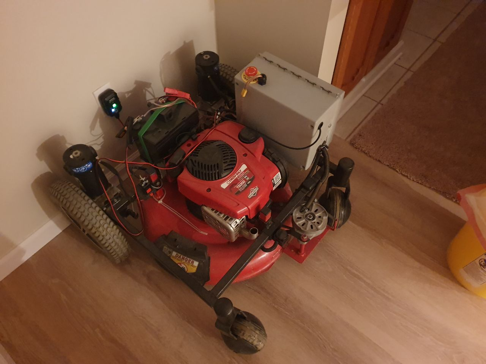
Developed a precision navigation system using RTK GPS with autonomous obstacle detection and avoidance capabilities. [webpage]
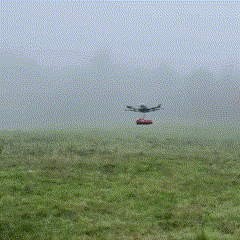
Designed multi-sensor systems for humanitarian demining efforts with UnitedAI, combining aerial imagery and ground-based detection. [webpage] 
Implemented a vision-language model system enabling a robotic arm to execute tasks based on natural language instructions and visual input. [webpage]
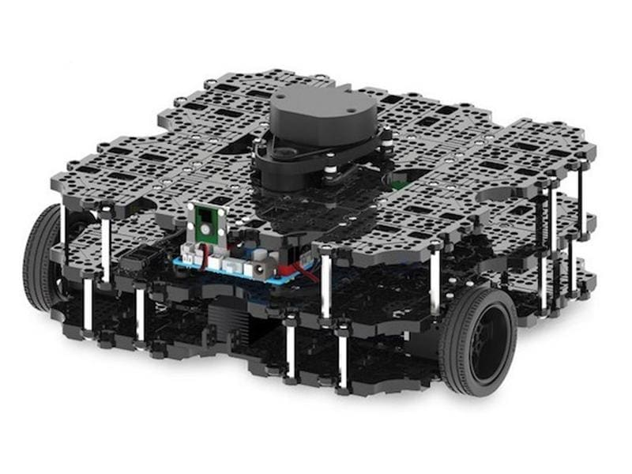
Created an autonomous navigation system for complex maze environments using LiDAR-based mapping and path planning, implemented in both simulation and real-world. [webpage] 
Built a responsive robot that interprets hand gestures in real-time using vision-based deep learning for human-robot interaction. [webpage] Competed in CERN's strategic AI programming hackathon, developing algorithms for resource management in simulated grid environments. [code] [certificate] 
Created an AI-powered learning platform that personalizes educational content based on individual reading patterns and comprehension levels. [code]
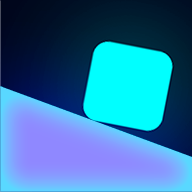
Designed and published a neon-themed puzzle-platformer game with procedurally generated levels, integrated analytics and monetization. [Play the game Online] [webpage]
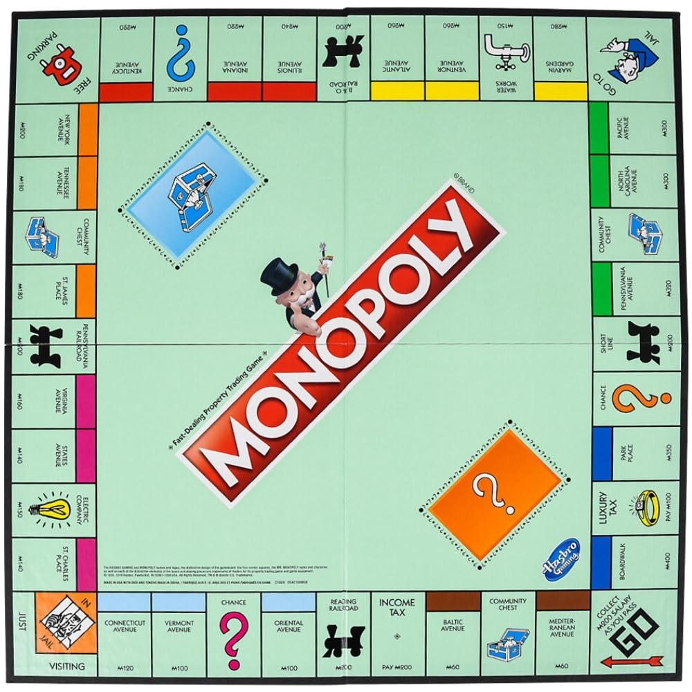
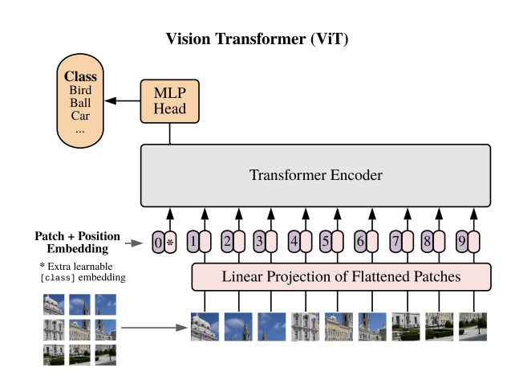
Implemented a Vision Transformer architecture from first principles to understand self-attention mechanisms for image data.
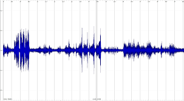
Developed a conversational AI system for navigating university dining options, with voice recognition and menu recommendation capabilities. [code]
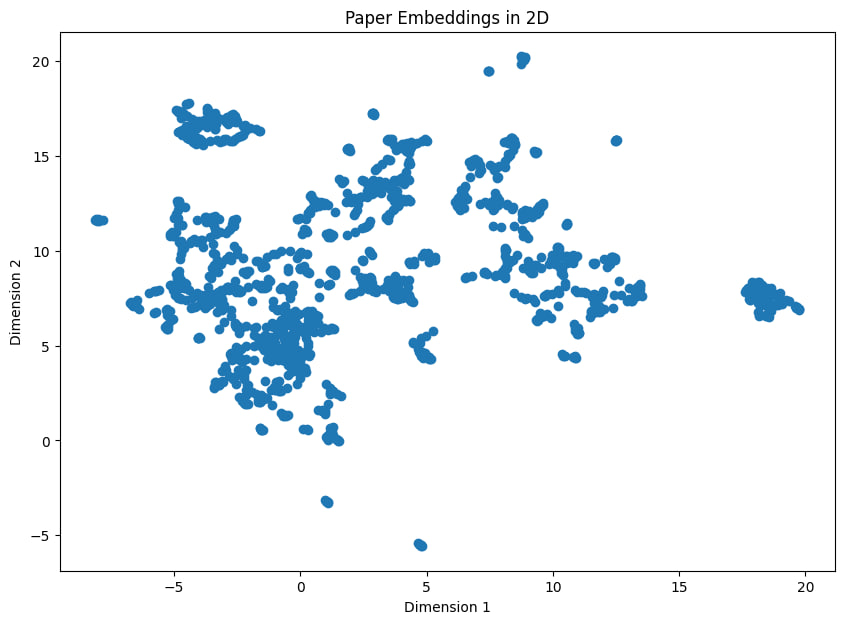
Created a semantic search engine for scientific literature using transformer-based embeddings to find conceptually similar papers. [code] 
Built a scalable, containerized web application for recipe management with user authentication, favorites, and personalized recommendations. [code]
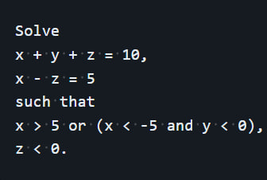
Developed a symbolic mathematics solver that parses and solves complex diophantine equations with formal grammar and constraint satisfaction. [code]
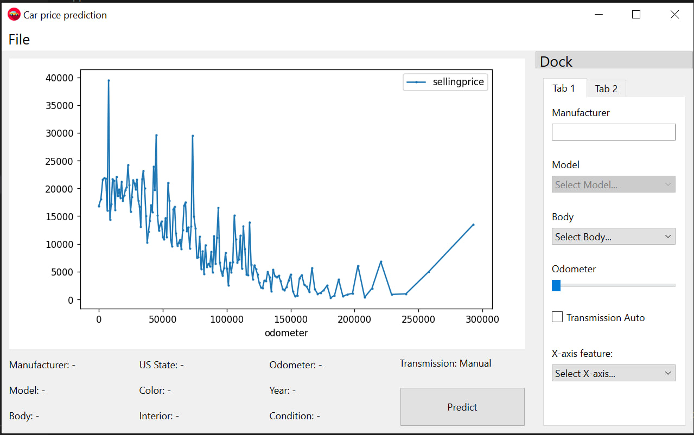
Created a desktop application that predicts auction car prices using machine learning, with interactive feature selection and result visualization. [code]
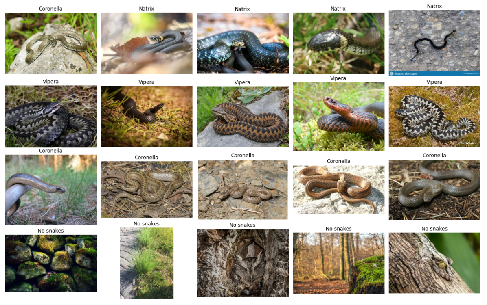
Built an image classification bot that identifies snake species from user-submitted photos with real-time feedback. [code]
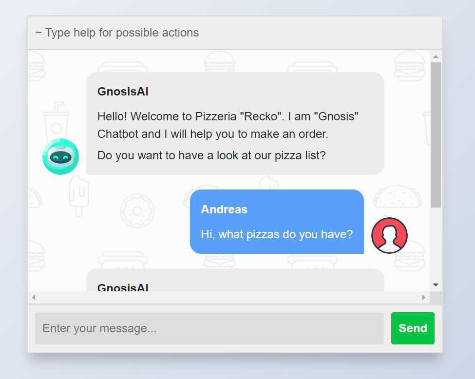
Developed a conversational ordering system with natural language understanding for pizza customization and order processing. [code]
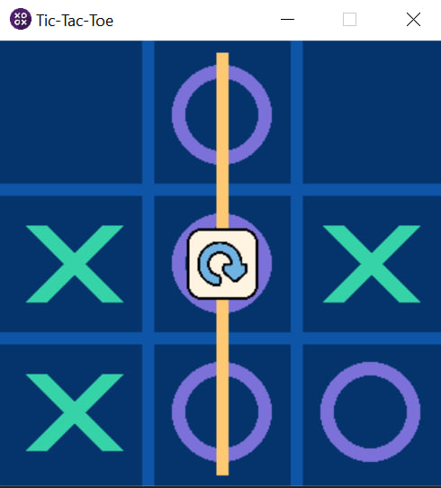
Implemented a Tic-Tac-Toe game with multiple AI difficulty levels using minimax algorithm and alpha-beta pruning. [code] 
Created a tool that compresses images using singular value decomposition, demonstrating the balance between compression ratio and quality. [code]
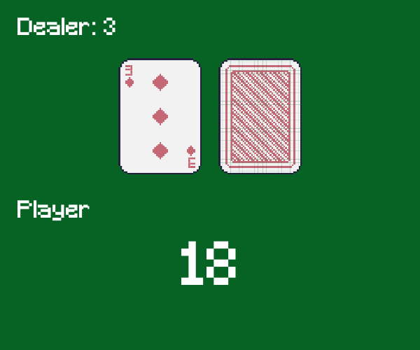
Trained a reinforcement learning agent to optimize playing strategy in Blackjack through experience-based policy improvement. [code] |
![[certificate]](https://tornadosky.github.io/doc/cern.jpg){kind=link}